01 / 05 — Grand T3
Amazone
Deux chambres et une salle de douche, pour une famille ou des amis.
dès 130 €par nuit
Découvrir Amazone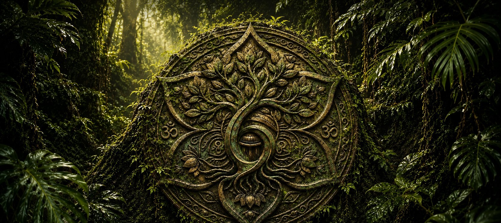
Lherm · à 20 minutes de Toulouse
Une bastide de trois siècles, un parc clos face aux Pyrénées et une piscine plein sud, à vingt minutes de Toulouse.
Entrer
Le domaine
Il reste le parc, l'eau, la lumière du Sud-Ouest et une maison qui a vu passer trois siècles.
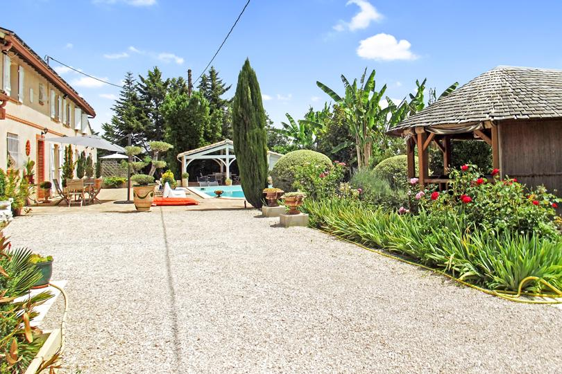
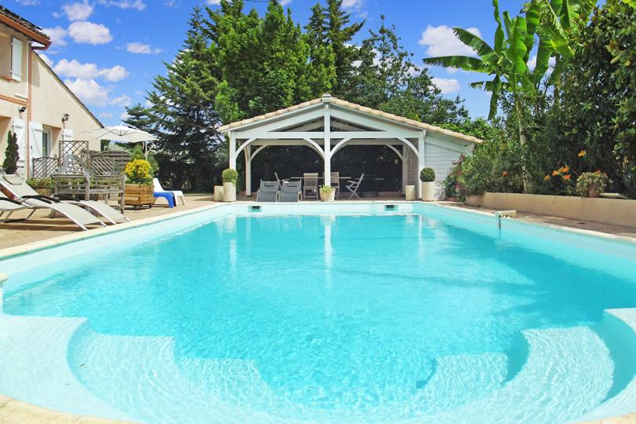
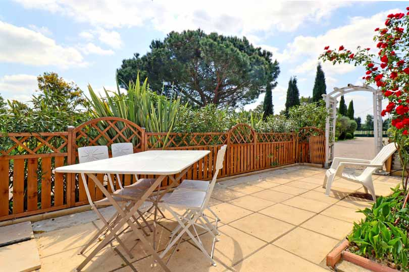
01 — Le domaine
4 600 m² plantés d'oliviers et d'arbres fruitiers, un kiosque en cèdre, une paillote et un pool house. En accès libre, au calme, les Pyrénées à l'horizon.

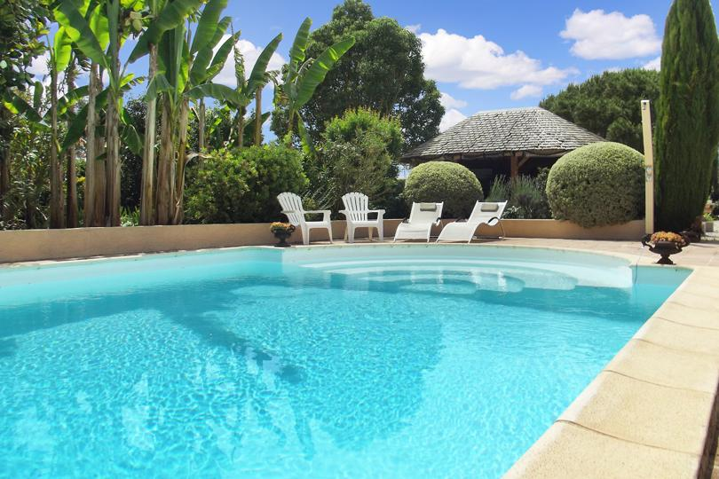
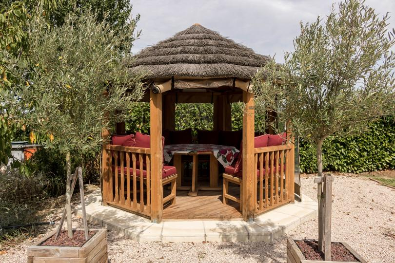


02 — Logements
Deux T3, deux studios et une love room. Jusqu'à quinze personnes lorsque le domaine se partage entre proches.
01 / 05 — Grand T3
Deux chambres et une salle de douche, pour une famille ou des amis.
dès 130 €par nuit
Découvrir Amazone02 / 05 — T3 modulable
Deux chambres et une salle d'eau privative, louable aussi en studio pour deux.
dès 110 €par nuit
Découvrir Libération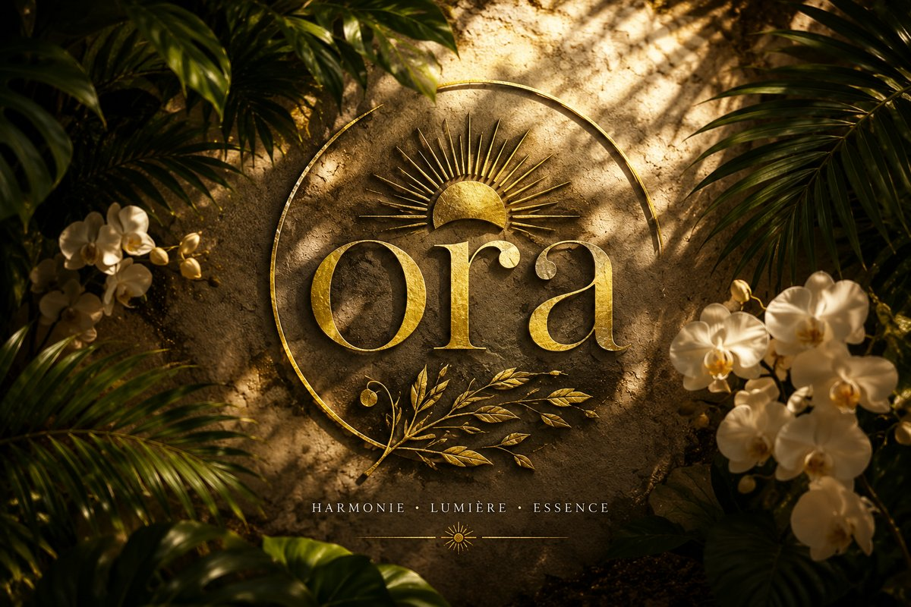
03 / 05 — Studio
Un studio au calme, qui communique avec Sens pour un séjour à quatre.
dès 55 €par nuit
Découvrir Ora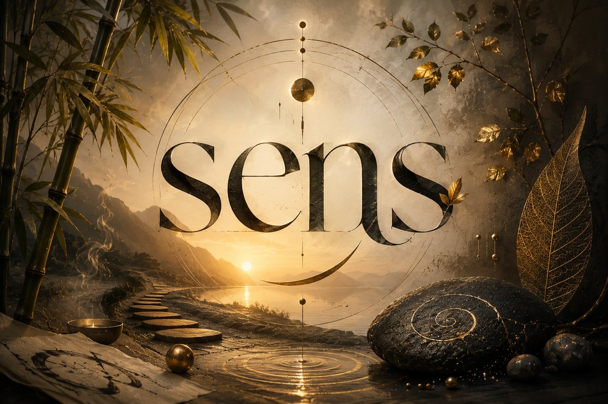
04 / 05 — Studio
De plain-pied, avec salle d'eau, à réunir avec Ora.
dès 55 €par nuit
Découvrir Sens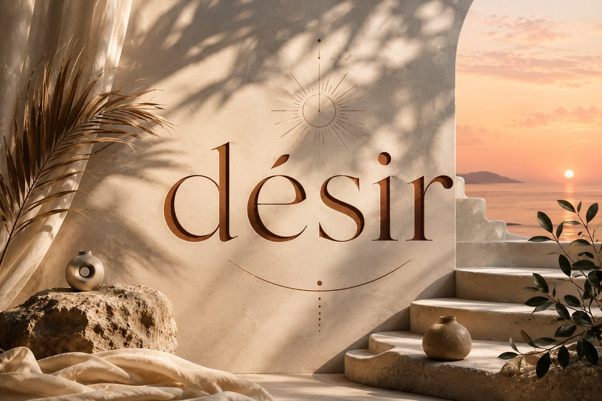
05 / 05 — Love room · dès juin 2027
Une love room de 38 m² pensée pour deux, à partir de juin 2027.
200 €la nuit · 2 pers.
Découvrir DésirPrix par nuit en basse saison. Parc en accès libre ; piscine en option, sur réservation.
03 — L'histoire
Ici, autrefois,on venaitfaire la paix.
Le Bégué était le sage du village, une sorte de juge de paix que l'on consultait pour apaiser les différends et réconcilier les familles. Longtemps appelé Gîte du Bégué, le lieu devient le Domaine des Six, avec le même esprit d'accueil.
04 — Célébrer

En extérieur, sous une tente permanente : 30 à 40 convives assis, jusqu'à 120 en cérémonie.
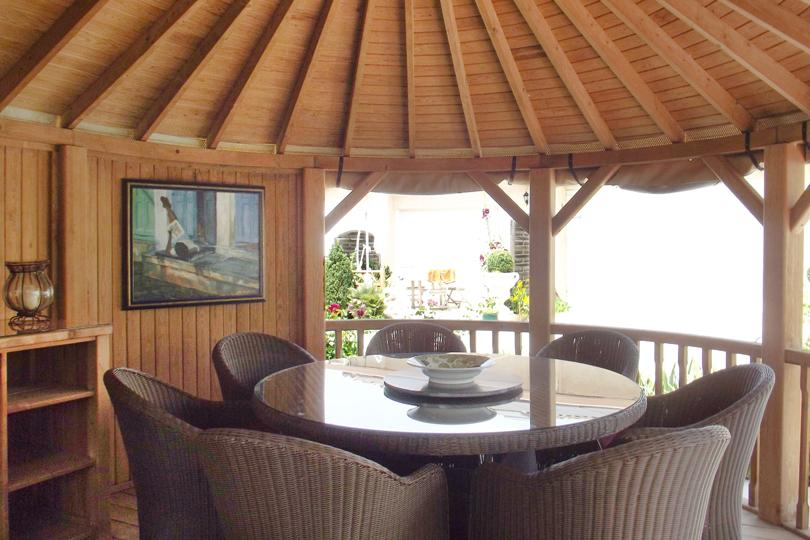
Une trentaine de personnes en réunion, 70 à 120 en conférence, au calme du parc.
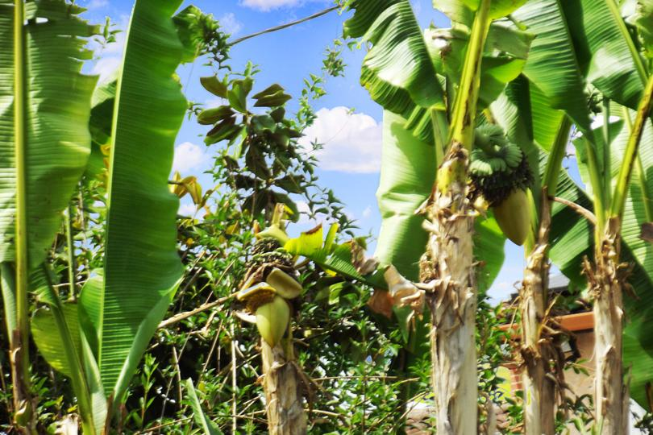
Yoga, méditation, ressourcement : le domaine se privatise face aux Pyrénées.
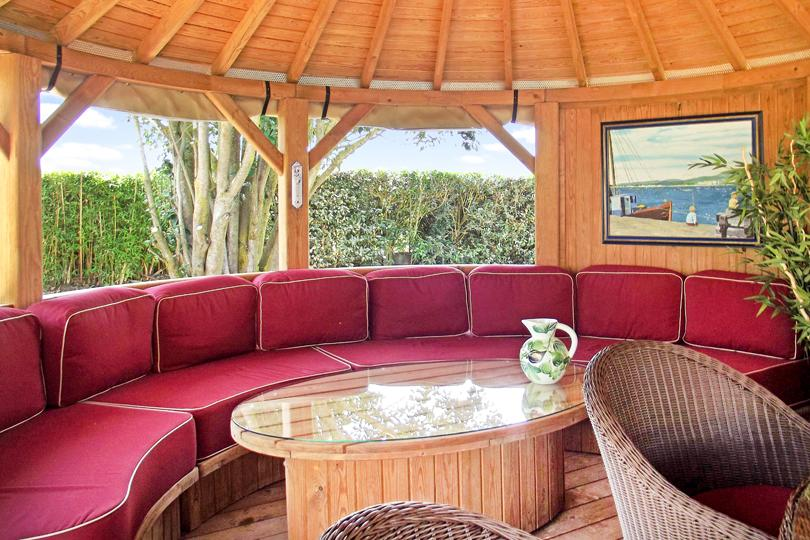
Anniversaires et retrouvailles : tout le monde dort sur place.
Questions fréquentes
Les réponses aux questions que l’on nous pose le plus. Toute la FAQ
Contact
Virginie & François vous répondent personnellement, par téléphone ou par e-mail.
05 — Réserver
Les premières dates sont ouvertes.Le domaine ouvre à la mi-janvier 2027. Dites-nous quand vous souhaitez venir, nous vous répondons personnellement.
Demander mes datesTéléphone 06 98 20 02 08 · francois.leterrier.cmw@gmail.com
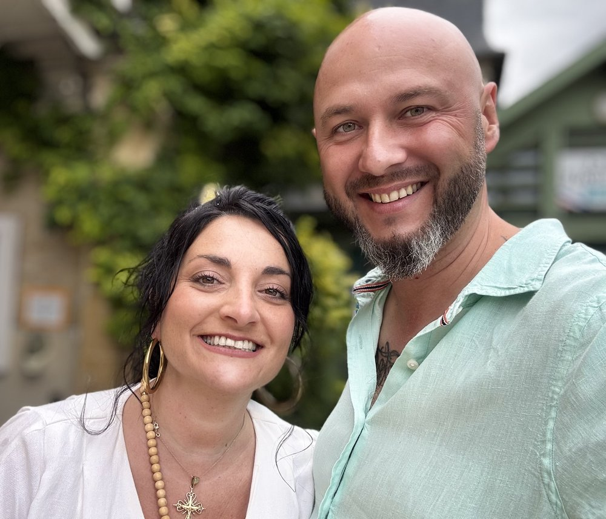
Vos hôtes
Amoureux de ce lieu et de la nature qui l'entoure, nous vous accueillons comme à la maison et partageons volontiers nos bonnes adresses du Sud-Toulousain.